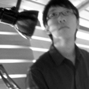
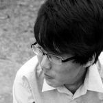

黃則誌 R.E. HUANG
Photograph and Copy Writer
國立雲林科技大學 視覺傳達設計系 三年級
將自己訂定為一個透過影像，把這群人的這種的生活傳達給觀看者的攝影師。
我盡我所能的去把那樣的感覺以快門捕捉下來。
拍攝的過程中，我也會去跟那些長輩們講話聊天，雖然有的是口齒不清、或者是有點智能障礙的，可能不太能溝通，但是我相信一個簡簡單單的笑容就能帶給他們力量了，就算只有一點點。而有一些可以溝通的老人，就可以聽到一些故事了，大多是心酸的，可是他們樂觀的態度卻是使人敬佩的！
而我從關懷仁愛之家的過程當中，得到了一份關懷社會的成就感。可是其實最偉大的還是在這個家庭中，一肩擔起照顧他們的大姊大哥們，他們很有耐心的每天去關懷照顧這些老人，了解他們的習慣、解決他們的問題，讓我感覺到我做的只不過是一個很淺薄的小事而已。
黃泰為 David HUANG
Photograph, Copy Writer and Video Editing
國立雲林科技大學 視覺傳達設計系 三年級
看破 / 無奈 / 愚人 / 自卑 / 空洞 / 甚至可以說無意識，總覺得所有老人的情緒都不盡相同。就像一個小世界，住著一群早已與世不爭的老人，可以說是被社會遺棄，一個孤獨悲慘但又奇妙歡樂的世界。
我在想，他們不是我們的什麼人，但是我們可以當他們的什麼人、幫他們做些什麼事，這段期間義工的大姐跟大哥們還有組長跟主任、看護人員都非常的熱心親切，知道我們來意後，給予我們全力的協助。
每次在仁家的拍攝完畢，我的心情總是充實飽滿的。把事情做好了，不但是為了自己，也為了這些老人，更重要的是把這些訊息傳達出去，我們應該做些什麼？募款？是人人都可以付出並且可以做到的，我們是否應該用我們的專業去幫助他們，畢竟在林內這麼鄉下的地方，他們一年365天會遇到幾個視傳領域的人呢?
黃舜白 SHIRO HUANG
Website Design
國立雲林科技大學 視覺傳達設計系 三年級
生老病死是每個人都會經歷的，透過攝影，讓人了解到世界上有很多事情，其實是由不得人的；世界上有很多人是你所不知道、而且需要關懷的。
不管看過幾次，總能被一張張的影像所震撼，一點一點的把心，像揉著紙張般整個揪成一塊。那種感覺是直接而心疼的。從別人，到自己的家人，再到自己，像是照片裡的奶粉空罐，被靜置在走廊的角落，無人聞問，就像是他們的寫照，會不會也將是自己的寫照？曾經充滿營養，滋養了這個社會，漸漸的消盡，最後殆空。那一陣酸又像漲水，漸漸湧上了鼻。我們都忙碌於奔波生活、汲汲於學業，但卻很難找到一些時間，讓自己靜下來，好好地對自己的家人、身邊的人、甚至陌生的人，付出一些關懷，一些最簡單的關懷。
關注於數字和比較之外，有更多人事物需要我們的關注與幫忙。也希望藉由此次網站的架設，能將這份關懷與訊息傳達出去，從而尋求更多的力量與幫助的可能性，藉此盡自己一份薄力。